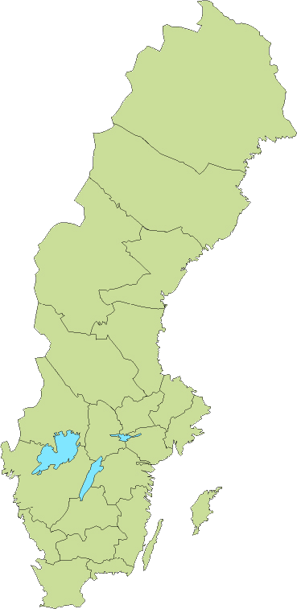
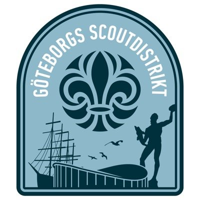

Scouting
1899-1900

Robert Baden-Powell
Belägringen av Mafeking (andra Boerkriget)
1907
England
General Robert Baden-Powell
Anvisningar i spejartjänst
(för icke-militärer och män)
Scout
=
Spejare

Scouting for boys
Brown Sea Island
(Utanför Southampton)
1910
Kristallpalatset (London)

Agnes Baden-Powell
(Syster till Robert)
Girl Guides
=
Flickscouter
Sverige då?
1910
Ebbe Lieberath
Riddarpojkarna i Göteborg
1912
KFUK Flickscouter
1913
Sveriges Flickors Scoutförbund
(Emmy Grén-Broberg)
1961
Svenska Scoutförbundet (pojkar och flickor)
1968
Ingen uppdelning på pojkar och flickor
2012
Alla förbund gick samman till ettbildas.
Saker att minnas:
- Sir Robert Baden-Powell
- Agnes Baden-Powell
- Boerkriget, Mafeking
- 1907 - första lägret, Scouterna grundas
- 1910 - Flickscouterna bildas
- 1910 - Ebbe Lieberath startar scouting i Sverige (Göteborg)
- 2012 - Scouternas riksorganisation bildas

- 1100 kårer
Hela Sverige
- 70.000 scouter (+ 20.000 i anda organisationer)- 1100 kårer
Distriktet

Göteborg
Göteborg
Kåren
Det Är vi!
Bohus scoutkår
Avdelningen:
- Spårare
- Upptäckare
- Äventyrare (VI!)
- Utmanare
- Rover
Patrullen
- Inte redo
- Shhhhhh!
- Vad sa du?
I Världen
World Association of Girl Guides and Girl Scouts (WAGGGS)
World Organization of the Scout Movement (WOSM)
World Scout Jamboree
Vart 4:de år
West Virginia, USA
Källor
- Wikipedia: Scouting i Sverige
- Wikipedia: Scouting (SV)
- Wikipedia: Scouting (EN)
- Wikipedia: List of World Organization of the Scout Movement members